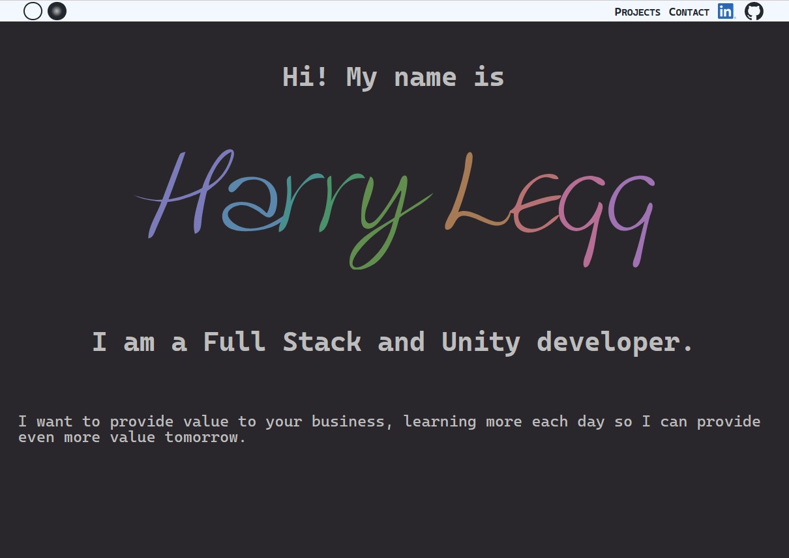
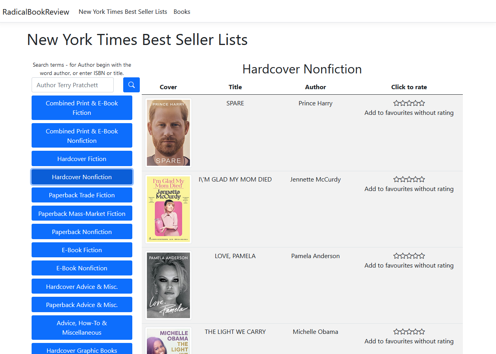
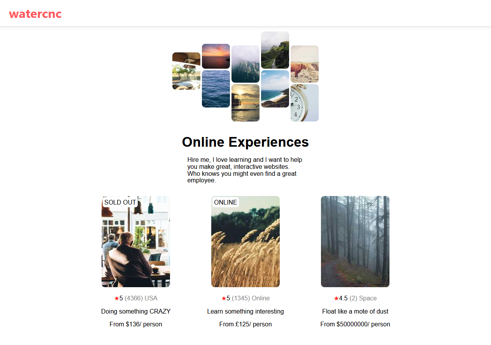
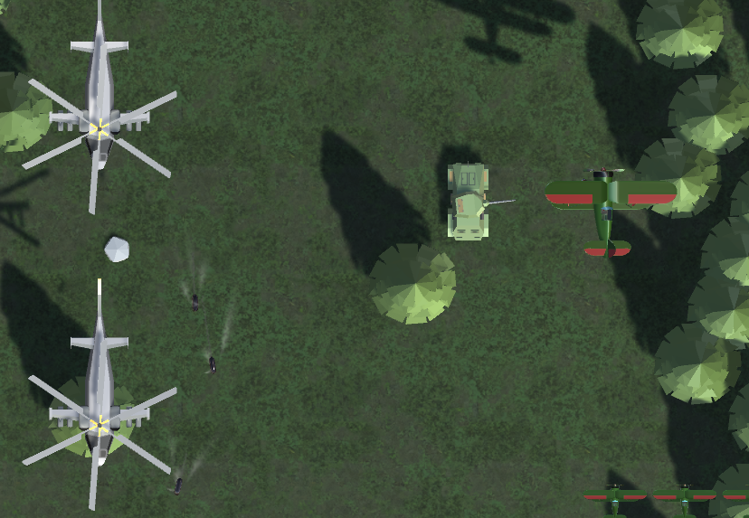
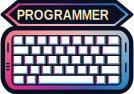
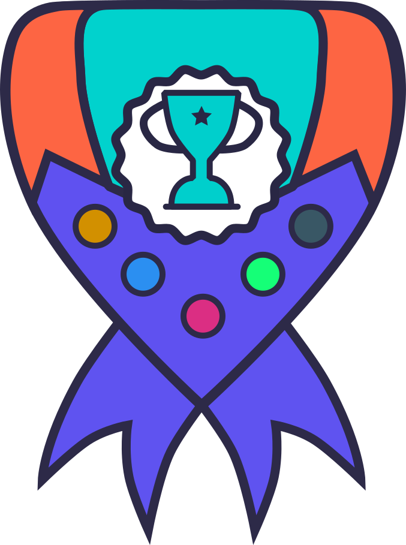
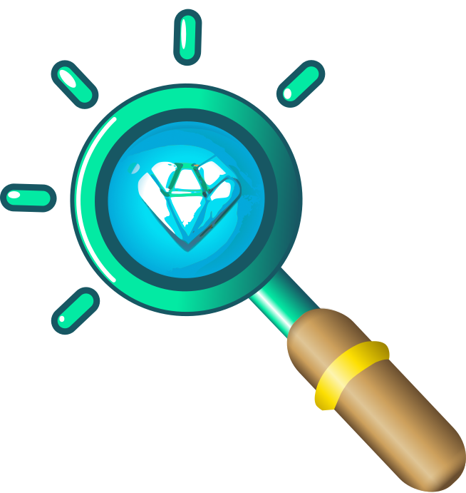

Hi! My name is Harry Legg
I am a Full Stack and Unity developer.
I want to provide value to your business, learning more each day so I can provide even more value tomorrow.
Skills
-
 HTML5
HTML5
-
 CSS3
CSS3
-
 Javascript
Javascript
-
 PHP
PHP
-
 C#
C#
-
 C++
C++
-
 MySQL
MySQL
-
 JQuery
JQuery
-
 Unity
Unity
- Image Editing
-
 Blender
Blender
-
 Laragon
Laragon
- Inkscape
-
 React
React
-
 Typescript
Typescript
-
 Vite
Vite
Projects
Personal Website
My tech stack for this site was Vanilla Javascript, CSS, and HTML, I used PHP for the backend.
I have not used any templates, I have tried to demonstrate an understanding of a range of techniques and effects. I recently added SWUP to my tech stack to include transitions between pages, I hope to build on these in the future.
Radical Book Review
This was an app I made for a job interview at Radical. The challenge was to create CRUD API which provided access to the New York Times Best Sellers lists and allowed the user to give the books ratings (or not) and enter them into a database stored locally.
As an optional extra I chose to create a front end to demonstrate the API as well but it was also possible to just run the API and test it with Swagger.
I used EntityFrameworkCore for the database interface and ASP.NET MVC framework for the frontend. Interactive elements were handled using jquery and styling was done with Bootstrap.
Airbnb Clone React App
I am in the process of learning React, I am following the Scrimba 12hr React Course. Where as the course uses interactive screen casts I am following it on youtube and completing the course in typescript. I am using Vite build tools and NPM.
This app loads random images from picsum so will appear different each time you load the page. This is different from the course version of the project because their hero image was a single static image where as I have used CSS to recreate the original design. The data for the cards is stored in an array to mimic data coming from an api.
See it 'live'!Unity Top-Down Scroller
I haven't yet finished this game to a point I am satisfied to release it to the world.
It is a recreation of a DOS game from 1993 that I got on a cover disk all of those moons ago. The original game was create by Patrick Piche and I have tried to recreate the atmosphere of the original using a modern game engine. It was after I started the project that I happened to discover that Patrick Piche now works for Unity.
I have also created an animal grazing simulation which used a neural network for the animals to find food and avoid the edge of the map, this was trained using a genetic algorithm adjusting the weights randomly each generation. I found neural networks to be surprisingly straight forward but I am not interested in persuing AI per se.
Client Feedback
Harry has been fantastic with transferring my website from one website hosting provider to another. He understood my frustrations with my current site and was able to iron them out on the new one without compromising the layout and look of the site.
He was brilliant at talking me through what he was doing and made the technical information much easier to digest for someone who is not IT literate.
He kept me posted on how he was doing and what he was doing which is super useful for when I need to make small changes myself. And very proactive to tinker with things to make them work just how I imagined.
Super grateful for everything he has done and for his patience.
Mouse Sails - Mousesails.co.uk
Your Achievements
During your visit to my website you have earned these achievements.
- 
- 
- 